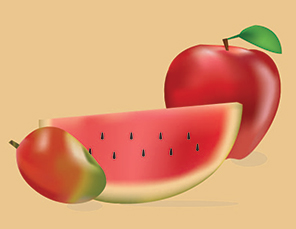
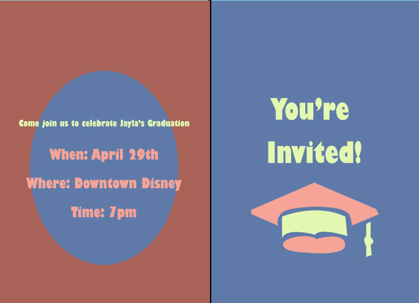

Welcome all! My name is Jayla Morris. I'm age 19 and I am a current student at Seminole State College of Florida. I am currently in school for Digital Media. I am a photographer and editor. I hope to be able to open my own business one day! My schooling is further enhancing my skills in editing so that I will be able to come out with even better photos. I have done a few photoshoots so far dating back from high school and with each, I get better. Thank you for visiting my site. You can scroll down to learn more about me and even see some of my work!
 This is a still life photo that I illustrated in Adobe Illustrator
This is a graphic design I put together using different stock photography to make this come together into one.
This is a logo design that I made in Illustator.
 This is a post card that I made using both Photoshop and Illustrator.
This is a tribal tattoo that I illustrated using Illustrator.